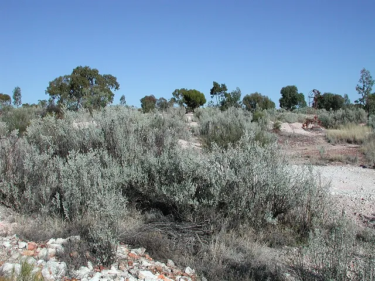

Starters & snacks · Popular in Arid centre and Temperate south-east
Saltbush chips
Saltbush chips is made with wild old man saltbush, a favourite in Arid centre and Temperate south-east.

How do you make saltbush chips?
Saltbush leaves fried crisp in light batter.
Wild ingredients
- Old man saltbush (Atriplex nummularia): in season all year round
Watch the recipe

Video: Weird Explorer on YouTube